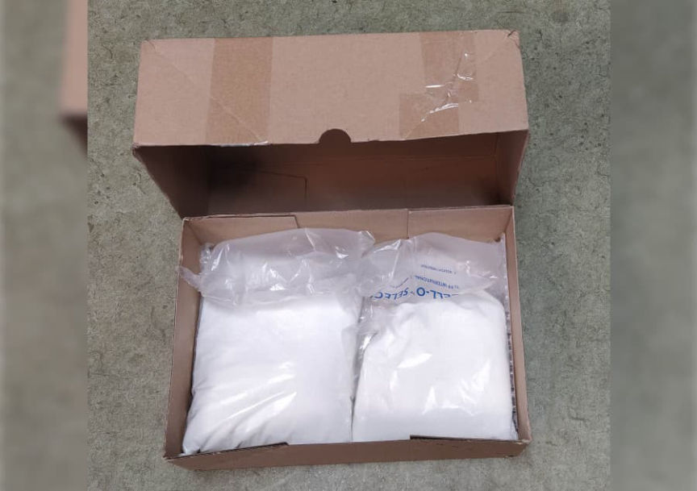
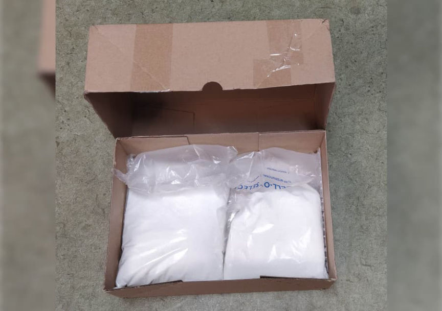

German Allegedly Bought Kilos of Amphetamine on the Darkweb
~1 min read | Published on 2022-05-12, tagged Allegedly, DarkWeb, Drugs, General-News, German using 173 words.
Authorities in Lower Bavaria, Germany, arrested a man for allegedly selling drugs he had purchased on the darkweb.
According to a press release from the Lower Bavaria criminal police inspectorate, police arrested a 33-year-old man from the southern district of Landshut after he had “ordered drugs for resale via the darknet.”

Investigators in the United States had identified the suspect as part of an investigation in April 2022. The investigators in the U.S. then relayed information about the suspect to German law enforcement agencies. The 33-year-old was “already known to authorities.”
Investigations by the Landshut Criminal Police Inspectorate resulted in the interception of two drug packages addressed to the 33-year-old. The interceptions resulted in the seizure of several kilograms of amphetamine.
The investigators executed a search warrant on the suspect’s residence in May 2022. The search resulted in the seizure of 20 grams of amphetamine, cash, and unspecified electronic devices. After the search, police arrested the defendant. He will remain in custody as the investigation continues.
According to a press release from the Lower Bavaria criminal police inspectorate, police arrested a 33-year-old man from the southern district of Landshut after he had “ordered drugs for resale via the darknet.”

Police seized several packages of amphetamine at a post office in Landshut.
Investigators in the United States had identified the suspect as part of an investigation in April 2022. The investigators in the U.S. then relayed information about the suspect to German law enforcement agencies. The 33-year-old was “already known to authorities.”
Investigations by the Landshut Criminal Police Inspectorate resulted in the interception of two drug packages addressed to the 33-year-old. The interceptions resulted in the seizure of several kilograms of amphetamine.
The investigators executed a search warrant on the suspect’s residence in May 2022. The search resulted in the seizure of 20 grams of amphetamine, cash, and unspecified electronic devices. After the search, police arrested the defendant. He will remain in custody as the investigation continues.